Strawberry
slug
Costasiella sp.*
Family
Costasiellidae
updated
Jun 2020
Where
seen? This tiny and superbly camouflaged slug is often
found on solitary
fan green seaweeds (Avrainvillea sp.) which they feed on. At low tide, many slugs are often seen on one sea fan, usually clustered near the base of this seaweed. It was previously in Family Limapontiidae. Divers sometimes call it 'Shaun the Sheep'.
Features: To about
1cm or smaller. Short, soft body with lots of short finger-like projections
(cerata) that are transparent at the tips and filled with green stuff.
Some have black spots, others with white stripes on the cerata. Tiny
black eyes close together between the pair of long rhinophores. No
oral tentacles.
It is difficult to tell apart the species in the field, but in general, Costasiella paweli and Costasiella kuroshimae look rather similar with cerata that are dark green, tips with bands of white and orange or pink. Costasiella usagi cerata have thin silvery lines along the length. |
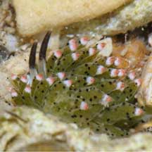
Pulau Hantu, Nov 09
Photo shared by James Koh on flickr. |
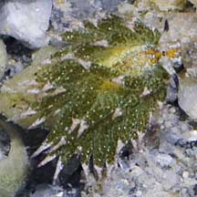
Tanah Merah, Dec 09 |
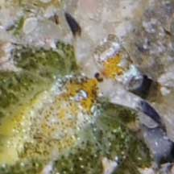
Their eyes are close together
in between the rhinophores.
Tanah Merah, Dec 09 |
*Species are difficult
to positively identify without close examination.
On this website, they are grouped by external features for convenience of
display.
| Strawberry
slugs on Singapore shores |
| Other sightings on Singapore shores |
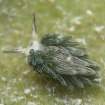
Changi, May 18
Photo shared by Toh Chay Hoon on facebook. |
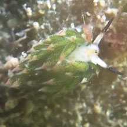
Changi, May 18
Photo shared by Toh Chay Hoon on facebook. |
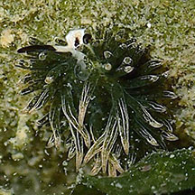
Chek Jawa, Jun 18
Photo shared by Toh Chay Hoon on facebook. |
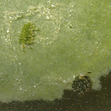
Chek Jawa, Jul 16
Photo shared by Toh Chay Hoon on facebook. |
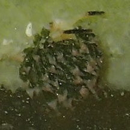
Chek Jawa, Jul 16
Photo shared by Toh Chay Hoon on facebook. |
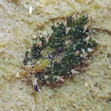
Chek Jawa, Jun 17
Photo shared by Toh Chay Hoon on facebook. |
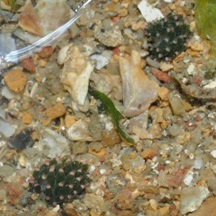
Pulau Sekudu, Oct 11
Photo shared by Rene Ong on facebook. |
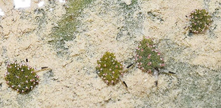
Beting Bronok, Jul 20
Photo shared by Loh Kok Sheng on facebook. |
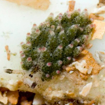
Tuas, Dec 14
Photo shared by Loh Kok Sheng on hig blog. |
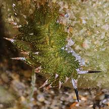
Tanah Merah, Oct 09
Photo shared by James Koh on his
blog. |
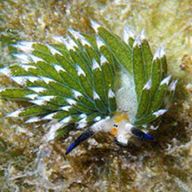
East Coast Park, Mar 10
Photo shared by Loh Kok Sheng on flickr. |
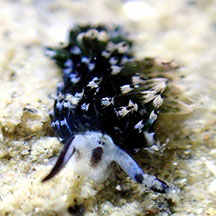
Sentosa Tg Rimau, Aug 20
Photo shared by Jianlin Liu on facebook. |
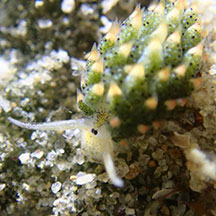
Lazarus Island, Oct 17
Photo shared by Jianlin Liu on facebook. |
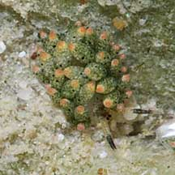
Pulau Tekukor,
Photo shared by James Koh on flickr. |
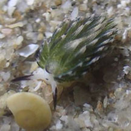
Kusu Island, Jul 20
Photo shared by Dayna Cheah on facebook. |
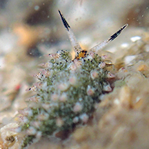
Kusu Island, Jun 15
Photo shared by Toh Chay Hoon on facebook. |
|
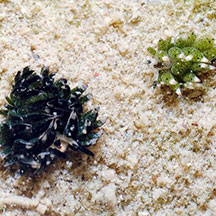
St John's Island, Feb 11
Photo shared by Loh Kok Sheng on flickr. |
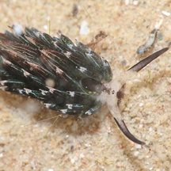
St. John's Island, Feb 11
Photo shared by James Koh on his
blog. |
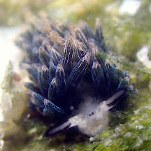
Big Sisters Island, Aug 25
Photo shared by Jianlin Liu on facebook. |
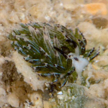
Big Sisters' Island, Feb 17
Photo shared by Marcus Ng on facebook. |
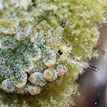
Big Sisters' Island, Jan 11
Photo shared by James Koh on flickr. |
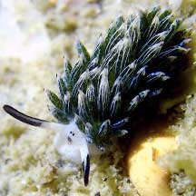
Small Sisters, Aug 21
Photo shared by Jianlin LIu on facebook. |
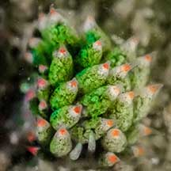
Pulau Jong, Aug 21
Photo shared by Vincent Choo on facebook. |
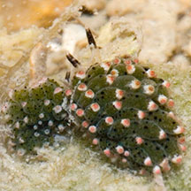
Pulau Hantu, Nov 09
Photo shared by Marcus Ng on flickr. |
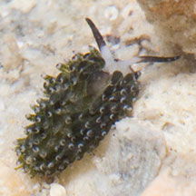
Pulau Hantu, Aug 14
Photo shared by Marcus Ng on flickr. |
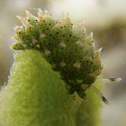
Cyrene Reef, Apr 10
Photo shared by Toh Chay Hoon on her
blog |
.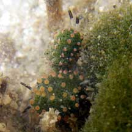
Cyrene Reef, Jul 10
Photo shared by Toh Chay Hoon on her
blog. |
|
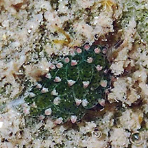
Pulau Semakau South, Feb 16
Photo shared by Toh Chay Hoon on facebook. |
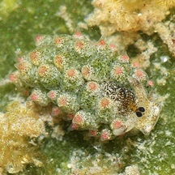
Pulau Semakau, Aug 11
Photo shared by James Koh on flickr. |
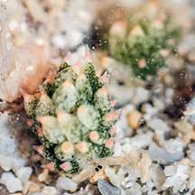
Terumbu Bemban, May 21
Photo shared by James Koh on flickr. |
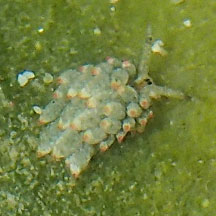
Terumbu Raya, Jun 18
Photo shared by Toh Chay Hoon on facebook. |
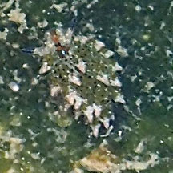
Terumbu Semakau, May 17
Photo shared by Toh Chay Hoon on facebook. |
|
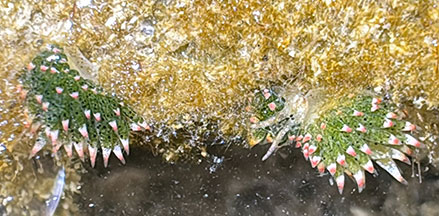
Beting Bemban Besar, Oct 25
Photo shared by Tammy Lim on facebook. |
|
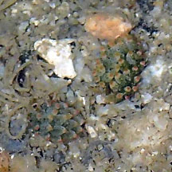
Beting Bemban Besar, May 17
Photo shared by Toh Chay Hoon on facebook. |
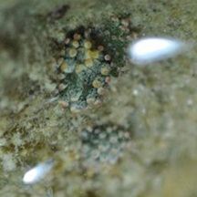
Terumbu Pempang Tengah, May 11
Photo
shared by Rene Ong on facebook. |
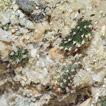
Terumbu Pempang Laut, Apr 11
Photo shared by James Koh on his
blog. |
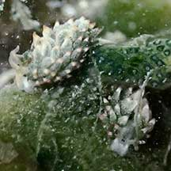
Terumbu Pempang Laut, Aug 21
Photo shared by Toh Chay Hoon on facebook. |
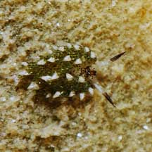
Pulau Pawai, Dec 09
Photo shared by James Koh on his
flickr. |
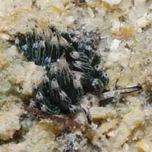
Pulau Sudong, Dec 09
Photo shared by James Koh on his
flickr. |
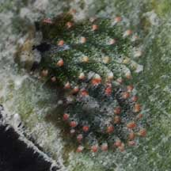
Pulau Sudong, Dec 09
Photo shared by Toh Chay Hoon on her
flickr. |
| Links
References
- K. R. Jensen. Sacoglossa (Mollusca: Gastropoda: Heterobranchia) from northern coasts of Singapore. 10 July 2015. The Comprehensive Marine Biodiversity Survey: Johor Straits International Workshop (2012) The Raffles Bulletin of Zoology 2015 Supplement No. 31, Pp. 226-249.
- Kathe R. Jensen, Patrick J. Krug, Anne Dupont, Masayoshi Nishina. 21 October 2014. A review of taxonomy and phylogenetic relationships in the genus Costasiella (Heterobranchia: Sacoglossa), with a description of a new species. Journal of Molluscan Studies (2014) 80 (5): 562-574.
- Kathe
R. Jensen. 30 Dec 2009. Sacoglossa
(Mollusca: Gastropoda: Opisthobranchia) from Singapore. The Raffles Bulletin of Zoology, Supplement 22: 207-223.
- Tan Siong
Kiat and Henrietta P. M. Woo, 2010 Preliminary
Checklist of The Molluscs of Singapore (pdf), Raffles
Museum of Biodiversity Research, National University of Singapore.
- Humann, Paul
and Ned Deloach. 2010. Reef
Creature Identification: Tropical Pacific New World Publications.
497pp.
- Kuiter, Rudie
H and Helmut Debelius. 2009. World
Atlas of Marine Fauna
 . IKAN-Unterwasserachiv. 723pp.
. IKAN-Unterwasserachiv. 723pp.
|
|
|